Delicious 美食小站
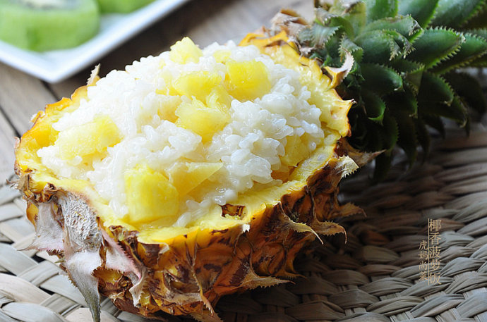
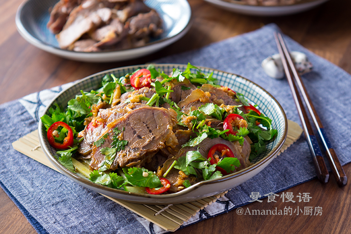
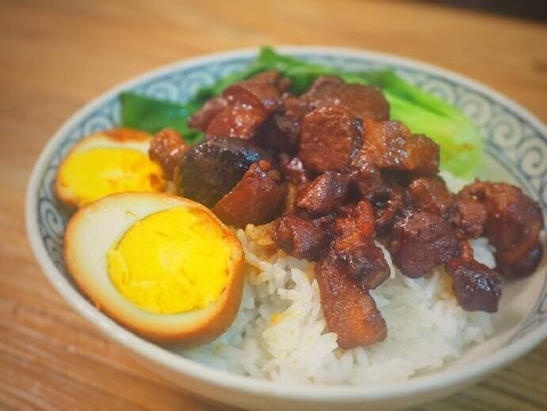
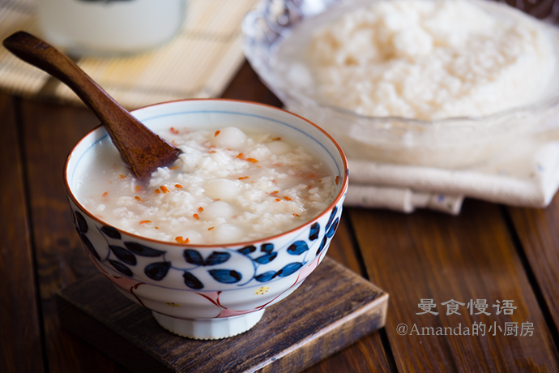
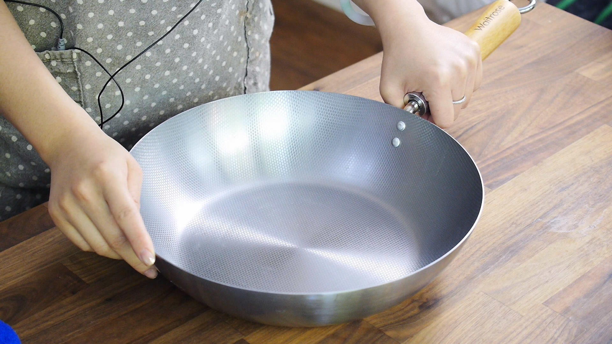
铁制厨具结实、耐用，受热均匀，对身体健康也有益。使用前，可在锅表面涂上一层薄薄的植物油， 然后在火上烘干。不论是铁盆、平底锅还是炖锅，在用之后要洗净烘干，以免生锈。如果锅或者盆生锈了， 可以放一点植物油，用百洁丝擦掉即可。
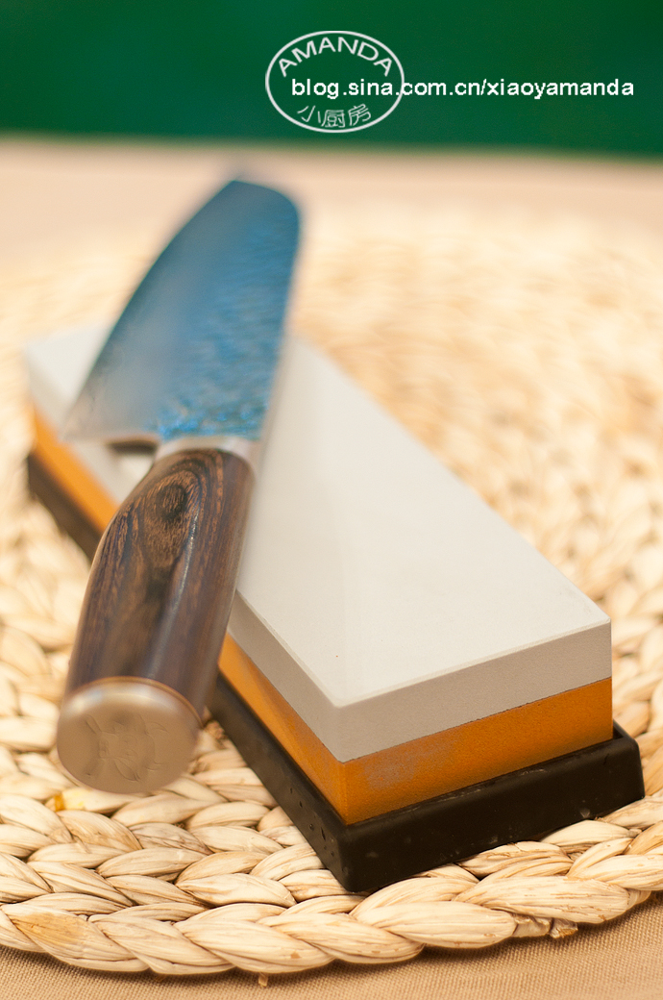
不粘锅是在锅底采用了不粘涂层。常见不粘性能最好的有特氟龙（Teflon涂层和陶瓷涂层， 其次还有特殊工艺的铁锅和不锈钢锅。新的不粘锅一定要彻底用水洗干净，并在锅内表面涂上一层食用油， 增强不粘的效果。烹调时，应用耐热尼龙、塑料或木制的锅铲，避免尖锐的铲具或金属器具损害不粘锅的表面。 不粘锅受热均匀，只须中至小火即能烹调食物，切忌长期猛火烘干。清洗的时候要注意，不应该等到不粘锅自然冷却后再洗， 以防涂层由热突然变冷而发生裂纹或剥落。
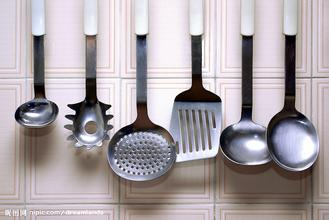
不锈钢由铁铬合金再掺入其他一些微量元素而制成的，耐腐蚀性比其他金属好，制成的器物美观耐用。 不锈钢的不锈性和耐蚀性是由于其表面上富铬氧化膜（钝化膜）的形成，使用后需要立即用温水洗涤干净烘干。
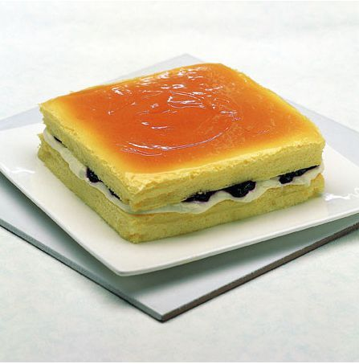
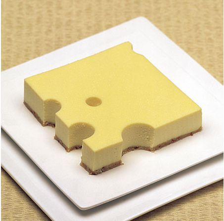
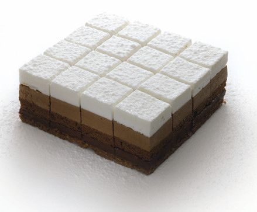
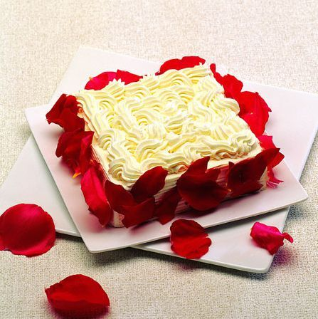
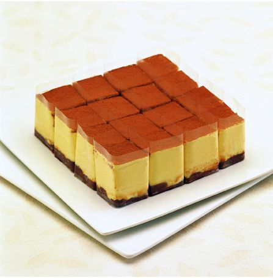
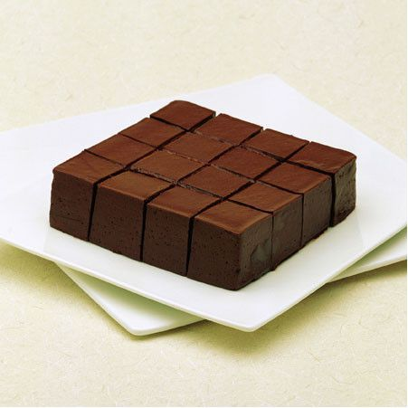
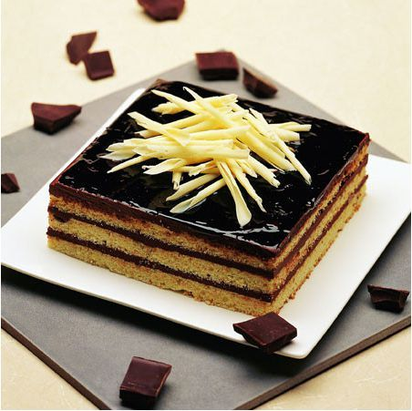
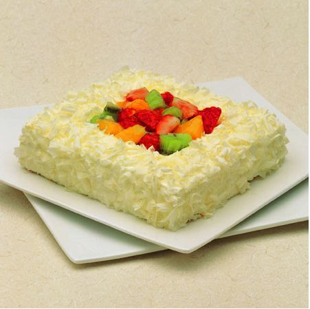